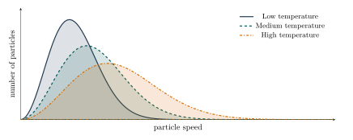
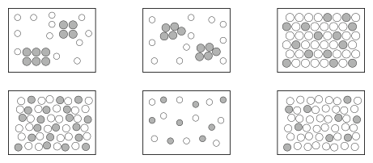

Further Applications of the Particle Model
In Chapter 1.4, the particle model was used to explain the states of matter and several physical properties. The same model can also help us understand temperature, the spontaneous mixing of particles, the movement of water through membranes, and the structure and separation of mixtures.
Temperature
Temperature is related to the motion of particles and therefore to the average kinetic energy of particles. At higher temperatures, particles have more kinetic energy on average, although individual particles may move at different speeds.
Absolute temperature is measured in kelvin (K). The Kelvin scale begins at absolute zero (0 K = -273.15

As temperature increases, the distribution shifts towards higher speeds and becomes broader. Slow and fast particles are present at every temperature, but a larger proportion of particles move quickly at higher temperatures.
Here , an online simulation of particles at different temperatures can be found.
Diffusion and Osmosis
Particles in liquids and gases move continuously and randomly. If their concentration differs between two regions, this motion produces a net movement from higher to lower concentration. This process is called diffusion. It continues until the concentration is uniform, although individual particles keep moving. Diffusion is generally faster at higher temperatures.
Here , an online simulation of particles at different temperatures can be found.
Osmosis is the net movement of a solvent through a semipermeable membrane from a region of lower solute concentration to a region of higher solute concentration. The membrane allows the solvent to pass but restricts the movement of certain dissolved particles.
Mixtures
Most materials encountered in everyday life are mixtures. They consist of two or more physically combined substances.
Pure substance
A pure substance has a fixed composition and characteristic properties. It is represented by one kind of particle. It cannot be separated into different substances by physical methods.
Mixture
A mixture contains at least two substances. Its composition can vary, and its components can be separated by physical methods because they retain different physical properties.
Homogeneous and Heterogeneous Mixtures
A homogeneous mixture has a uniform composition and appears as a single phase. Examples include air, salt water, and brass.
A heterogeneous mixture contains distinguishable regions or phases. Examples include soil, smoke, and milk. Some heterogeneous mixtures, such as milk, may appear uniform to the naked eye.
Types of Mixtures
| states of matter | name and particle model | example |
|---|---|---|
| rock | ||
| brass, steel, bronze | ||
| muddy water, ink, dispersion paint | ||
| salt water, sugar water | ||
| smoke from a pipe, dust-laden air in a sand storm | ||
| sponge | ||
| milk, salad dressing, hand cream | ||
| Alcoholic drinks | ||
| rain clouds (droplets of water in the air) | ||
| soap bubbles | ||
| Mineral water (contains gases like oxygen) | ||
| air |
table salt solution
graphite
table salt
diamond
air
dry ice
Soil
Rose gold
Natural gas

Separation Methods
The components of a mixture can often be separated without a chemical reaction because each component retains its own physical properties. A suitable separation method exploits a difference in properties such as particle size, density, solubility, boiling point, or attraction to a surface.
Separating a Mixture of Sand and Table Salt
Sand and table salt can be separated in three steps. Each step is a physical process: no new substance is formed.
1. Extraction
Table salt dissolves easily in water:
2. Filtration
sub-microscopic level macroscopic level
3. Evaporation
Summary
| Separation method | Description | Properties used for separation | Type of mixture | Typical application |
|---|---|---|---|---|
| distillation | vaporization of substances with different boiling points followed by condensation | boiling point | l/l (hom.) | refinement of crude oil |
| Chromatography | relies on the different ability of substances to adsorb to certain surfaces (stationary phase) and to dissolve in certain solvents (mobile phase) | solubility particle size adsorption attraction | Several possibilities | Analysis and separation of mixtures in the lab |
| sieving | separating particles of different sizes through the holes of a sieve | particle size | s/s | gravel quarry |
| filtration | insoluble solids are retained by a filter through which only liquids can pass | particle size | s/l | coffee tea |
| sedimentation | particles in a suspension settle at the bottom of the fluid | density | s/l (het.) | sedimentation tanks in sewage treatment plants |
| decantation | pouring off the liquid top layer | density | s/l l/l (het.) | separation of mixtures of water and sand or oil and water |
| centrifugation | making use of the centrifugal force | density | s/s s/l l/l | production of cream |
| extraction | relies on the different solubilities of substances | solubility | s/s | production of salt making of coffee or tea |
| evaporation | evaporation of solvent | bp | s/l (hom.) | recovery of table salt |